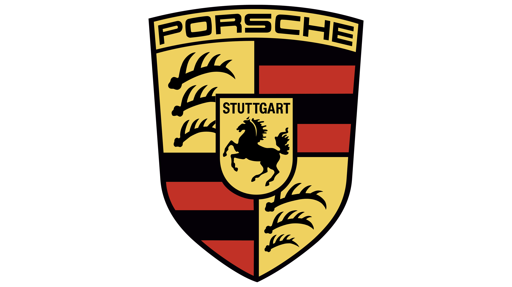

Welcome to the Porsche Saloon!
|
Welcome: |
Ingenieurskunst ohne Kompromisse. Porsche is more than a car manufacturer — it's a legacy of precision, performance, and passion. Founded by Ferdinand Porsche in 1931, the brand has shaped automotive history with iconic models like the 911. From racetracks to winding roads, every Porsche is engineered to deliver an unforgettable driving experience. Porsche 911: The Timeless Icon of Performance![[Modelo 1]](images/porsche/modelo1.jpg)
As you step closer, the unmistakable silhouette of the Porsche 911 comes into view — a shape that has captivated enthusiasts since 1964. Its sloping roofline and pronounced rear arches speak of decades of refinement, each curve honed by both wind tunnel and racetrack. The air is filled with the faint echo of its legendary flat-six, a sound that has become the heartbeat of Porsche’s identity. Moving around to the front, the round headlamps stand proud, a direct link to the earliest 911s, while subtle aerodynamic touches hint at the performance hidden within. The bodywork glistens under the lights, every panel a testament to precision engineering and timeless design. Peer inside and you’ll find a cockpit built for the driver — supportive seats, a perfectly positioned steering wheel, and the iconic five-gauge instrument cluster. It’s an environment that invites you to take the wheel, to feel the connection between man and machine. This is more than a sports car on display; it’s a living legend. From mountain passes to Le Mans victories, the 911 has proven itself on every stage. Standing here, you’re not just looking at a car — you’re looking at over half a century of passion, innovation, and unbroken lineage. Porsche 968: Precision and Balance Redefined![[Modelo 2]](images/porsche/modelo2.jpg)
Approaching the Porsche 968, you’re greeted by a shape that bridges the elegance of the late ’80s with the precision of the ’90s. Its long, flowing hood and integrated pop-up headlights give it a distinctive face, while the wide stance and sculpted flanks hint at the balance and control that lie beneath. Walk along its profile and you’ll notice the perfect proportions of a front-engine, rear-wheel-drive sports car — a configuration that delivers both comfort and agility. The 968’s design is clean and purposeful, with subtle aerodynamic elements that enhance stability without distracting from its timeless lines. Inside, the cabin offers a blend of driver-focused ergonomics and understated luxury. Supportive seats, clear instrumentation, and intuitive controls make it a place where long journeys and spirited drives feel equally at home. Under the hood, a 3.0-liter inline-four — the largest four-cylinder engine Porsche ever produced — delivers smooth, linear power and remarkable torque. Combined with a finely tuned chassis, it offers a driving experience defined by precision, balance, and confidence. The 968 stands as a testament to Porsche’s ability to refine and perfect, creating a sports car that rewards every mile. Porsche Boxster: The Little Brother with a Big Spirit![[Modelo 3]](images/porsche/modelo3.jpg)
Parked just beyond the larger, more imposing 911s, the Porsche Boxster greets you with a friendly confidence. Introduced in the mid-1990s, it was Porsche’s way of welcoming a new generation of drivers into the family — a roadster that carried the brand’s DNA but in a more compact, approachable form. Its mid-engine layout gives it perfect balance, and the low, wide stance hints at agility and playfulness. The design is clean and modern, with smooth curves that flow from the rounded nose to the short, purposeful tail. With the roof down, it invites you to experience open-air driving the way Porsche intended — pure, direct, and engaging. Inside, the Boxster offers a snug cockpit that wraps around the driver. Every control is within easy reach, and the seating position places you low and connected to the road. It may be the “little brother” in the lineup, but it carries itself with the same precision and quality as its bigger siblings. On the road, the Boxster comes alive. Its responsive steering, eager flat-six engine, and finely tuned suspension make every corner a joy. It’s proof that in the Porsche family, even the smallest member can deliver a driving experience that’s nothing short of exhilarating. Porsche 911 GT2: Unleashing Pure Racing Fury![[Modelo 4]](images/porsche/modelo4.jpg)
Even among the elite ranks of the 911 family, the GT2 stands apart — a machine bred for the track but unleashed on the open road. As you approach, the widened fenders, aggressive front splitter, and towering rear wing make its intentions clear: this is a car built to dominate. Circling to the side, you can see how every aerodynamic element serves a purpose, channeling air to keep the GT2 planted at extreme speeds. The lightweight construction and stripped-back focus hint at its uncompromising nature, where every gram saved translates into sharper performance. Inside, the cabin is purposeful and minimalistic. Deeply bolstered seats hold you firmly in place, while the steering wheel and gear lever fall perfectly to hand. There’s no excess here — only the essentials needed to extract every ounce of performance. Under the rear decklid lies a turbocharged flat-six engine delivering staggering power, capable of propelling the GT2 to speeds that blur the line between road car and race car. It’s raw, it’s visceral, and it demands respect. The 911 GT2 isn’t just about driving fast — it’s about experiencing the pure, unfiltered essence of Porsche’s racing spirit. Porsche 911 GT3: Track-Bred Excellence for the Road![[Modelo 5]](images/porsche/modelo5.jpg)
From the moment you lay eyes on the Porsche 911 GT3, its racing pedigree is unmistakable. The aggressive front fascia, sculpted air intakes, and purposeful stance all speak of a machine honed for the track. Every line and curve has been shaped by aerodynamic necessity, ensuring that form and function work in perfect harmony. Walking along its profile, you notice the lowered ride height, lightweight wheels, and massive brakes — all components chosen to deliver uncompromising performance. The fixed rear wing isn’t just for show; it generates the downforce needed to keep the GT3 glued to the tarmac at high speeds. Inside, the cabin is stripped of excess, focusing entirely on the driving experience. Deeply bolstered sport seats, a thick-rimmed steering wheel, and a clear, no-nonsense instrument cluster put the driver at the center of the action. It’s a cockpit that demands engagement and rewards skill. Under the rear decklid lies a naturally aspirated flat-six engine that sings to redline with an urgency few cars can match. Coupled with razor-sharp steering and a chassis tuned for precision, the GT3 delivers a driving experience that blurs the line between road car and race car. This is Porsche distilled to its purest form — a celebration of speed, control, and connection. Porsche Carrera Concept: A Glimpse into the Future of 2000![[Modelo 6]](images/porsche/modelo6.jpg)
Right, so here we are, the year 2000, and Porsche has decided to show us what the future looks like. And it’s this — the Carrera Concept. At first glance, it’s unmistakably Porsche: the curves, the stance, the sort of face that says, “Yes, I will overtake you, and no, you can’t stop me.” But then you notice the details — the sharper lines, the futuristic lights, and the kind of interior that makes you feel like you’ve just stepped into the cockpit of a spaceship… one that just happens to do 180 miles an hour. Walk around it and you realise this isn’t just a design exercise. It’s Porsche flexing its engineering muscles, saying, “We can do tradition, but we can also do tomorrow.” The proportions are perfect, the aerodynamics are clever, and the whole thing looks like it’s been carved out of a single block of speed. Inside, it’s all clean surfaces, advanced materials, and a driving position that makes you feel like the hero in some sci-fi epic. You half expect a voice to say, “Engage warp drive” when you press the starter button. And when you do, the engine note is pure Porsche — a reminder that no matter how futuristic it gets, the soul of the brand is still there, snarling behind you. This isn’t just a concept car. It’s a promise. A promise that in the next century, Porsche will still be building cars that make your heart race, your palms sweat, and your neighbours jealous. And frankly, I can’t wait. Porsche 911 Millennium Edition: Celebrating a New Era in Style![[Modelo 7]](images/porsche/modelo7.jpg)
As the world stepped into the year 2000, Porsche marked the occasion with something truly special — the 911 Millennium Edition. Limited in number and rich in detail, it was more than just a car; it was a celebration of heritage meeting the promise of a new century. Finished in an exclusive Violet Chromaflair paint that shifted hues under changing light, the Millennium Edition shimmered like no other 911 before it. Chrome accents, unique badging, and polished alloy wheels set it apart, while the familiar 911 silhouette reminded everyone that some icons never fade. Inside, the cabin was appointed with supple leather in a two-tone scheme, complemented by special trim and a numbered plaque to mark its exclusivity. Every surface spoke of craftsmanship, every detail a nod to Porsche’s commitment to excellence. Beneath the rear decklid, the flat-six engine delivered the performance expected of a 911 — smooth, responsive, and thrilling. But in this edition, the drive carried an extra sense of occasion. It wasn’t just about speed; it was about being part of a moment in time, a bridge between the 20th century and the future of Porsche engineering. |